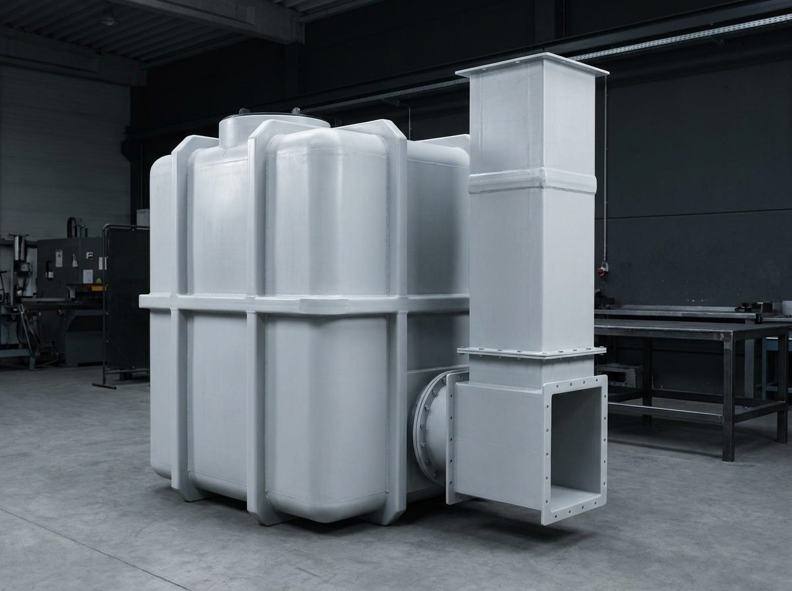
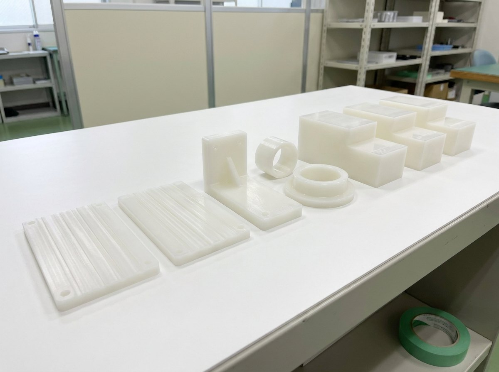
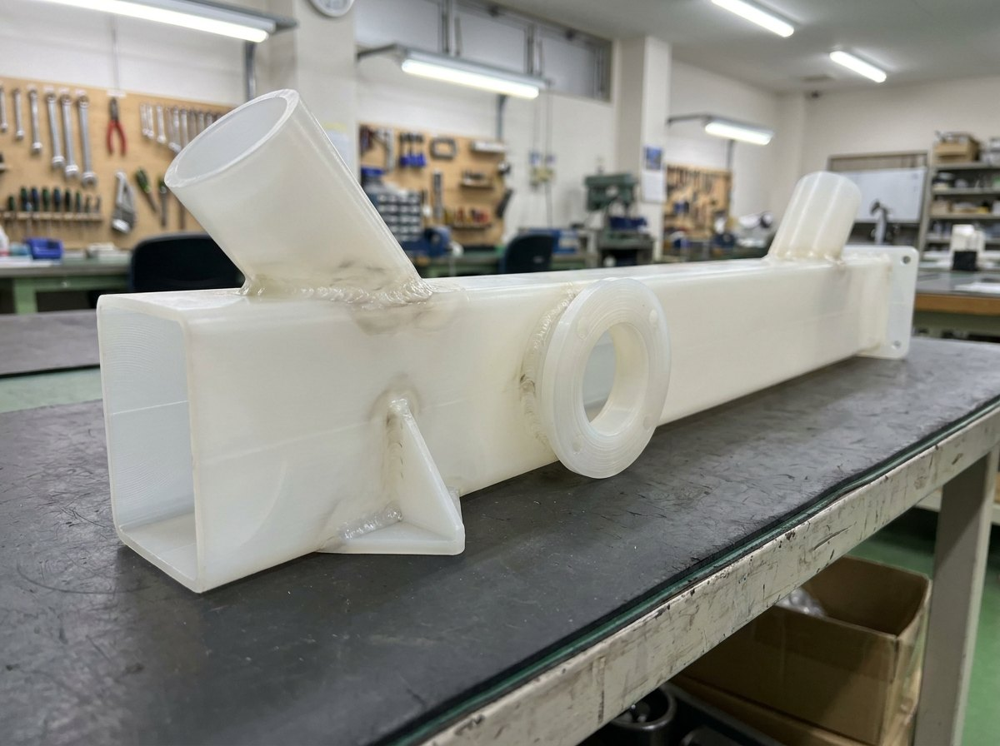

突合せ（熱板）溶着
削り出した部品の端面同士を熱板で溶かし、圧着して一体化します。 継ぎ目の凹凸が少なく、面がそのままつながった仕上がりになります。
素材のサイズを超える大きさや、削り出しだけでは刃物が届かない入り組んだ形状。 そうした部品は、分割して削り出したうえで溶着し、一体化します。 ポリプロピレン（PP）は表面エネルギーが低く接着剤が乗りにくい素材ですが、 母材と同じ樹脂を熱で溶かして接合する溶着なら、継ぎ目の強度を確保できます。 金型を起こす必要がないため、1個だけの試作にも、途中の設計変更にも対応できます。

どこで分割して削り、どこを溶着でつなぐか。 見える面に継ぎ目を残さない割り方と、強度が要る部分の接合方法を、 形状に合わせて組み立てます。
削り出した部品の端面同士を熱板で溶かし、圧着して一体化します。 継ぎ目の凹凸が少なく、面がそのままつながった仕上がりになります。
熱風で母材と溶接棒を同時に加熱し、継ぎ目に沿ってビードを形成します。 リブの根元や入り組んだ内側など、細かい部位の接合に向いています。
溶かした樹脂を押し出しながら盛り付ける工法です。 厚みのある部材や、長い接合線を効率よく仕上げられます。
割れ、欠損、穴あきの補修や、完成後の部分的な形状変更にも対応します。 現物を確認したうえで、可否と方法をご提案します。
切削だけでは削り切れない大きさ、抜き方向が取れない入り組んだ形状。 分割して削り、溶着で組み上げることで、金型を起こさずに形にします。



手書きのスケッチや現物からでも進められます。3D-CADによるデータ製作も社内で対応可能です。
用途、寸法、必要な強度をお伺いします。図面がない場合は現物や写真からでも構いません。
どこで分割して削り、どこを溶着でつなぐか。見える面に継ぎ目を残さない割り方をご提案します。
削り出しから溶着、表面の仕上げまで社内で対応。必要に応じて塗装まで一貫して承ります。
土日も営業。価格、納期ご相談ください。